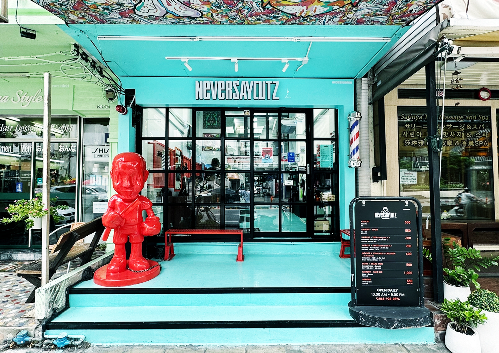
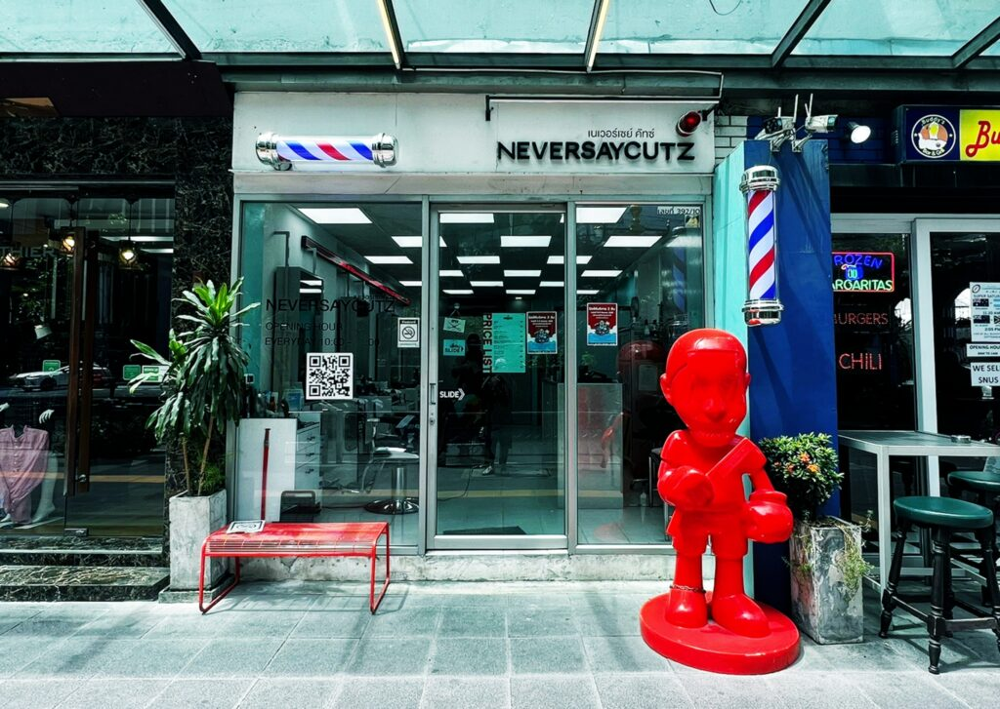
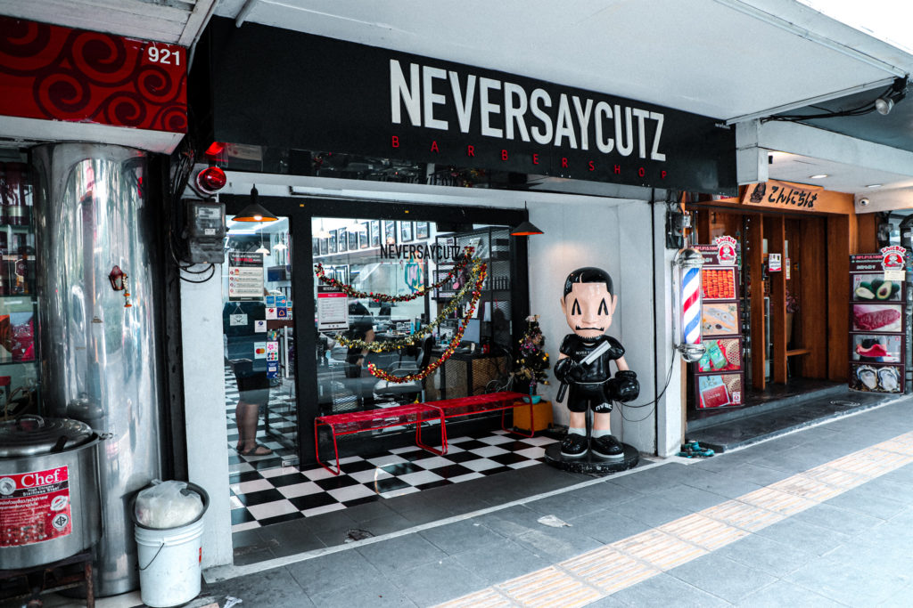
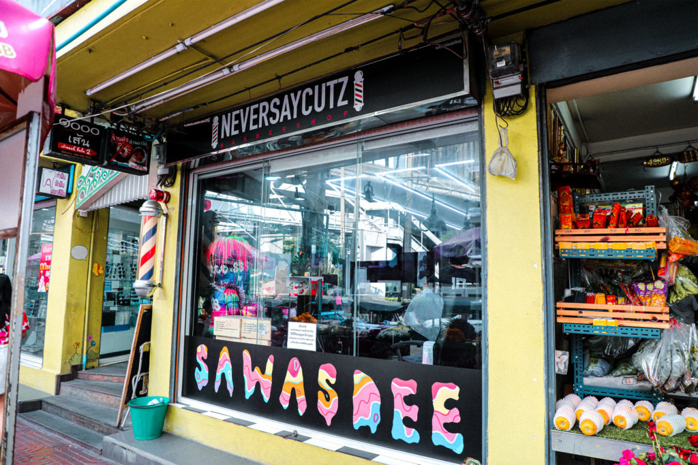
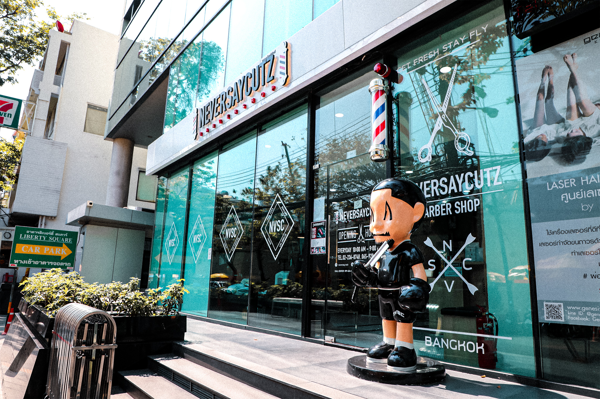
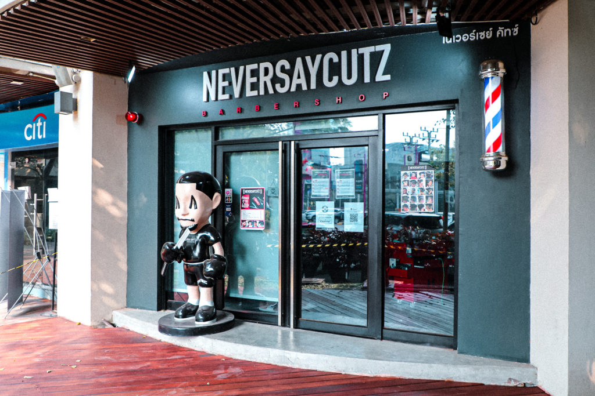
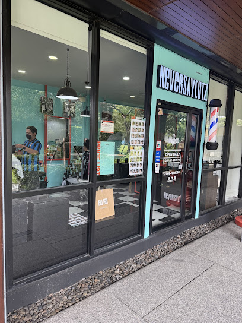
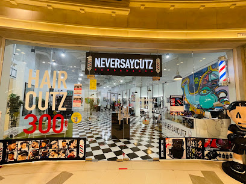

HQ
SUKHUMVIT 55 (THONGLOR) — HEAD OFFICE
สุขุมวิท 55 (ทองหล่อ) — สำนักงานใหญ่
125/34, 2nd–4th Floor, Soi Sukhumvit 55 (Thonglor), Klongton Nua, Wattana, Bangkok 10110
125/34 ชั้น 2-4 ซอยสุขุมวิท 55 (ทองหล่อ) คลองตันเหนือ วัฒนา กรุงเทพฯ 10110
BANGKOK
กรุงเทพมหานคร
25 branches 25 สาขา













PROVINCES
ต่างจังหวัด
2 branches 2 สาขา

MOBILE & CONTAINER
โมบายและคอนเทนเนอร์
7 units 7 ยูนิต